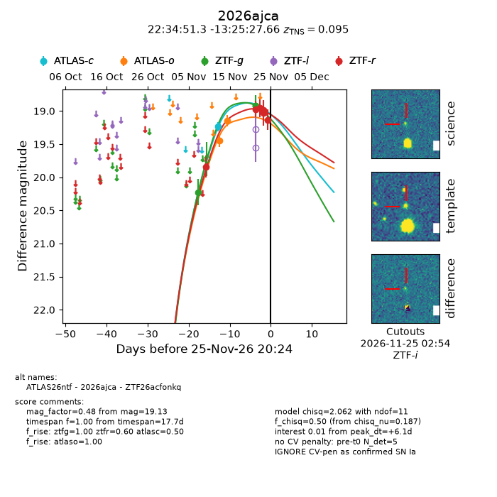
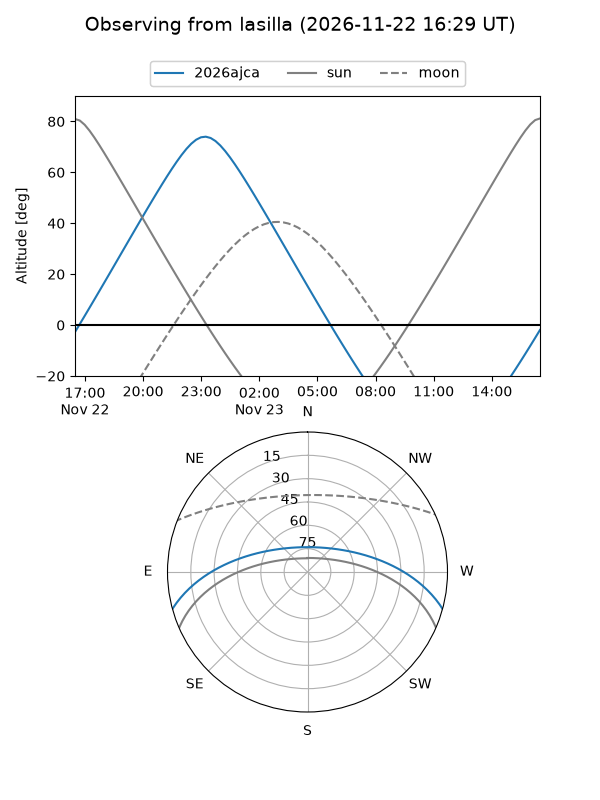
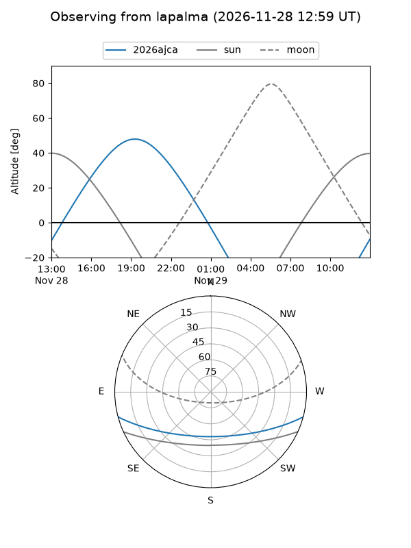
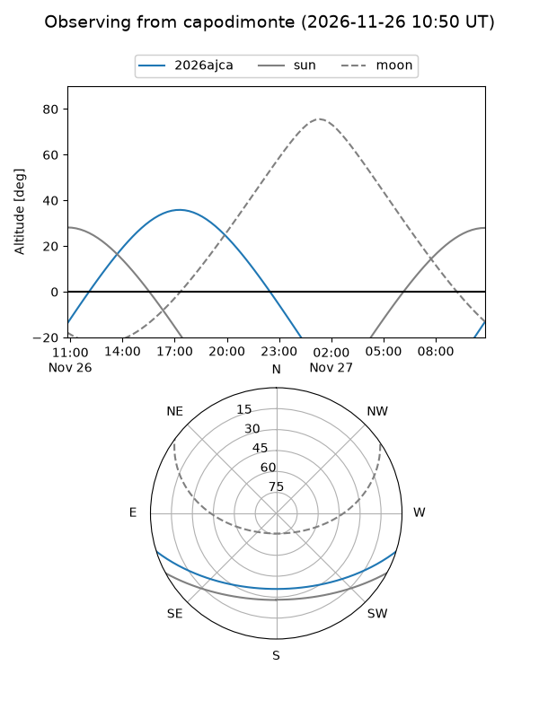
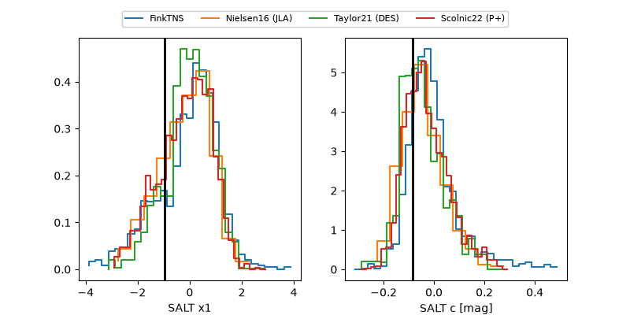

2026ajca
Target 2026ajca at 2026-11-25 20:26
Aliases and brokers:
FINK-ZTF: ztf.fink-portal.org/ZTF26acfonkq
Lasair-ZTF: lasair-ztf.lsst.ac.uk/objects/ZTF26acfonkq
ALeRCE-ZTF: alerce.online/object/ZTF26acfonkq
YSE-PZ: ziggy.ucolick.org/yse/transient_detail/2026ajca
TNS name: wis-tns.org/object/2026ajca
Direct TNS query: direct search
alt names
ZTF26acfonkq (ztf,fink_ztf)
2026ajca (tns,yse)
ATLAS26ntf (atlas)
Coordinates:
equatorial (ra, dec) = 338.7138,-13.42435
equatorial (HMS+DMS) = 22:34:51.32,-13:25:27.66
galactic (l, b) = (49.3089,-55.31600)
Flags:
TNS type: SN Ia
TNS redshift: 0.0950
peak dt: +6.1
Photometry:
last atlasc=19.23, atlaso=19.14, ztfg=18.92, ztfr=19.13
1 atlasc, 2 atlaso, 3 ztfg, 6 ztfr detections
Lightcurve

Visibility



Additional plots
